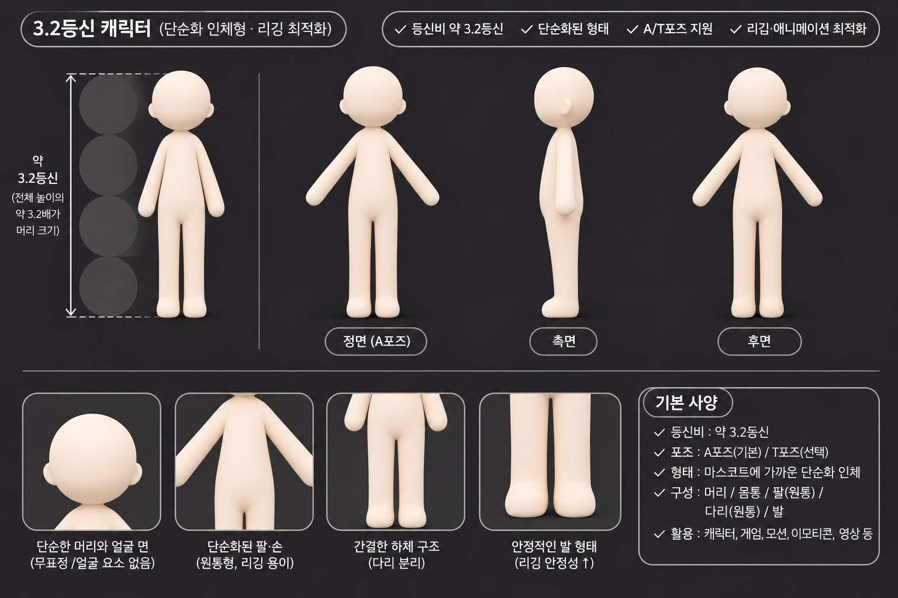

PROJECT PROGRESS / 02
설계
이야기와 화면의 규칙을 정합니다.
설계 방향 정리2026.11.10 정리 · 사용자 설명과 공개 기록에 근거한 현황입니다. 계획·제안과 실행 결과를 구분합니다.
세부 작업을 눌러 내용을 펼쳐보세요. 진행 중인 작업은 펼쳐져 있습니다. 완료 표시는 해당 작업에만 적용됩니다.
01캐릭터를 위한 형태 연구● 진행 중
01 / VISUAL STUDY
등신비, 머리와 몸의 형태, 근육의 덩어리와 관절을 나누어 살펴봅니다. 얼굴·의상 같은 표면 요소를 덜어내고 구조에 집중하는 방향입니다.
확인한 범위: 생성 이미지가 존재합니다. 실제 3D 메시, 리깅 성공이나 학습 성능을 입증하는 자료는 아닙니다.
이 방향이 나오기까지 ↗
02작품 속 시간을 움직이며 아바타의 기록을 읽습니다.● 진행 중
03 / EXPERIENCE CONCEPT
작품 속 시간은 2120~2126년입니다. 자매의 SNS 피드를 통해 시점별 게시물과 스토리를 읽는 방식을 구상하고 있습니다.
배경, 인물, 효과음, 말풍선을 나누어 구성합니다. 대사는 텍스트로, 공식 번역은 언어별 자료로 관리하는 방향입니다.
이 아카이브에는 실제 SNS 로그인·댓글·시간축 체험 기능을 제공하지 않습니다. 아래 구조는 작품 화면의 설계 설명입니다.
대사 · 말풍선 텍스트와 모양
효과음 투명 이미지
인물 개별 이미지
배경 독립 이미지
03제작 규칙으로 구체화할 항목○ 진행 대기
작품 컷과 말풍선별 ID, 언어별 대사와 폰트 정보를 JSON으로 관리하는 방향입니다. 공식 번역은 언어 버튼으로 제공하고, 브라우저 번역을 사용할 수 있도록 대사는 이미지에 합치지 않는 구상입니다.
실제 데이터 규격과 화면 동작은 구현·검증이 필요한 항목입니다.
규칙을 정하게 된 과정 보기 →